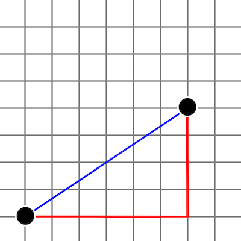

05 Checkpoint: Writing Functions
Overview
Demonstrate your understanding of writing your own functions with parameters and then calling those functions by completing the following individual checkpoint assignment.
Problem Statement
Calculating the distance between two points is a common problem encountered in many fields such as computer graphics, game design, machine learning, and astronomy.
There are a few different approaches to performing this calculation. Two that are relatively common include Euclidean Distance and Manhattan Distance.

In the graph above, the euclidean distance between two points is shown in blue. The Manhattan distance is shown in red. (The Manhattan distance, sometimes called the Taxicab distance, is so named because it represents the path a taxi in Manhattan would have to follow when driving from one point to another.)
Euclidean Distance
Given two points, $A$ and $B$, the Euclidean Distance between them can be calculated as:
$$\text{Euclidean Distance} = \sqrt{ (A_x - B_x)^2 + (A_y - B_y) ^ 2 }$$
In other words, we first calculate the difference in their x coordinates and square that. Then we calculate the difference in their y coordinates and square that. Then we add those together and take the square root.
Manhattan Distance
Given two points, $A$ and $B$, the Manhattan Distance between them can be calculated as:
$$ \text{Manhattan Distance} = | A_x - B_x | + | A_y - B_y | $$
In other words, we first calculate the difference in their x coordinates and take the absolute value of that. Then we calculate the difference in their y coordinates and take the absolute value of that. Then we add those together.
Assignment
Write a program that prompts the user for the $x$ and $y$ values of two points and then displays the Euclidean and Manhattan distances between those points. Your program should use functions for calculating each distance, and for displaying the results.
Sample Run
Enter A's x coordinate: 0
Enter A's y coordinate: 0
Enter B's x coordinate: 3
Enter B's y coordinate: 4
The Euclidean Distance between A and B is: 5.00
The Manhattan Distance between A and B is: 7.00
Starter Code
You may wish to use the following to guide you in how to structure your code.
Note that the abs() built-in function will return the absolute value of a number, and the math.sqrt() function will return the square root of a number.
# 1. The sqrt() function is in the math module,
# so import that first.
# 2. Define the calculate_euclidean function here. It will
# need parameters for each of the coordinates (4 in total),
# and should return the Euclidean distance.
# 3. Define the calculate_manhattan function here. It will
# also need four parameters and should return the Manhattan
# distance.
# 4. Define your display_results function here. It will need
# two parameters, one for each distance you wish to display.
# It does not need to return anything.
# 5. Now that your functions are defined, get the input
# values from the user, making sure to convert them to floats.
# 6. Call each of your distance functions, passing the input
# values as arguments. Make sure to store the results of each
# function in variables.
# 7. Call the display_results function, passing as arguments
# the two variables you're using to store your distances.
Testing Procedure
Verify that your program works correctly by following each step in this testing procedure:
- Run your program using the input shown in the sample run section above. Ensure that your program's output matches the sample run output.
Sample Solution
When your program is finished, view the sample solution for this assignment to compare your solution to that one
Before looking at the sample solution, you should work to complete this checkpoint program first. However, if you have worked on it for at least an hour and are still having problems, feel free to use the sample solution to help you finish your program.
Submission
When complete, report your progress in the associated I-Learn quiz.